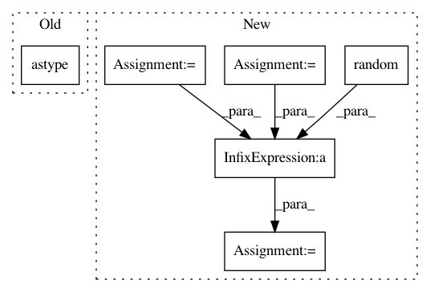

0940b083d3cdd0db46c867523e9a58b196e6e9d5,python/test/function/test_assign.py,,test_assign_forward_backward,#Any#Any#Any#,30
Before Change
def test_assign_forward_backward(seed, ctx, func_name):
from nbla_test_utils import function_tester
rng = np.random.RandomState(seed)
inputs = [rng.randn(2, 3, 4).astype(np.float32) * 2 for _ in range(2)]
grads = np.zeros((48,))
function_tester(rng, F.assign, lambda dst, src: src, inputs, ref_grad=lambda *args: grads,
ctx=ctx, func_name=func_name, atol_f=1e-3, atol_b=1e-2)
After Change
@pytest.mark.parametrize("seed", [314])
def test_assign_forward_backward(seed, ctx, func_name):
rng = np.random.RandomState(seed)
dst = nn.Variable((2, 3, 4), need_grad=True)
src = nn.Variable((2, 3, 4), need_grad=True)
assign = F.assign(dst, src)
src.d = np.random.random((2, 3, 4))
assign.forward()
assert np.allclose(dst.d, src.d)
dummy = assign + np.random.random()
dst.grad.zero()
src.grad.zero()
dummy.forward()
In pattern: SUPERPATTERN
Frequency: 3
Non-data size: 6
Instances
Project Name: sony/nnabla
Commit Name: 0940b083d3cdd0db46c867523e9a58b196e6e9d5
Time: 2019-01-09
Author: takuma.seno@gmail.com
File Name: python/test/function/test_assign.py
Class Name:
Method Name: test_assign_forward_backward
Project Name: pymc-devs/pymc3
Commit Name: 120e438fcd6357fc81a979d92b39b2bd7101dd34
Time: 2013-05-05
Author: chris.fonnesbeck@vanderbilt.edu
File Name: pymc/step_methods/metropolis.py
Class Name: BinaryMetropolis
Method Name: astep
Project Name: pymc-devs/pymc3
Commit Name: d3443536f3d4e39d5e0b8f90e1f9d0e25af77713
Time: 2013-05-06
Author: chris.fonnesbeck@vanderbilt.edu
File Name: pymc/step_methods/metropolis.py
Class Name: BinaryMetropolis
Method Name: astep